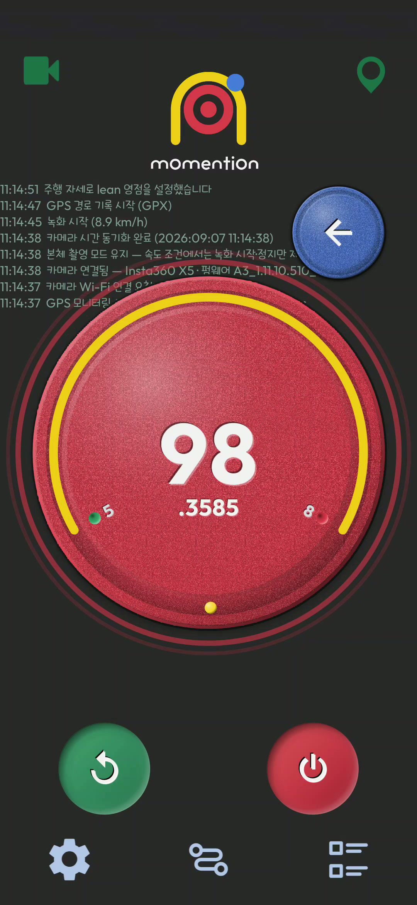
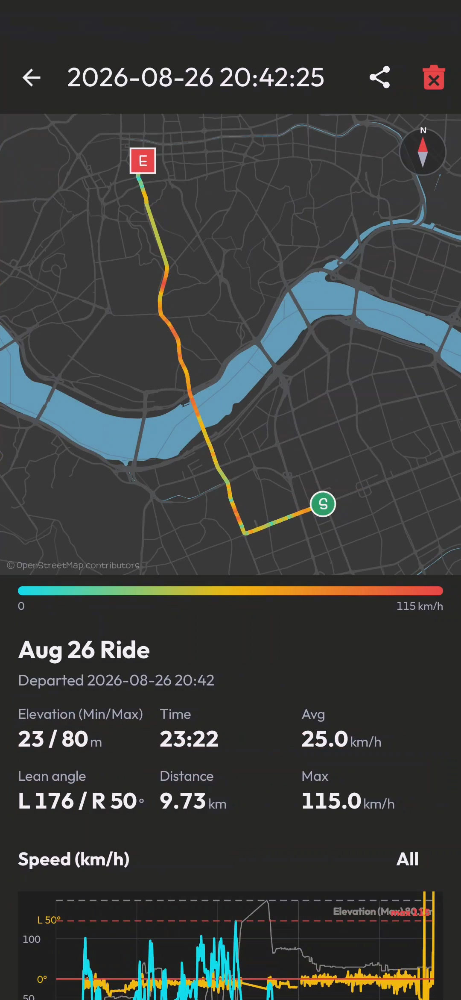
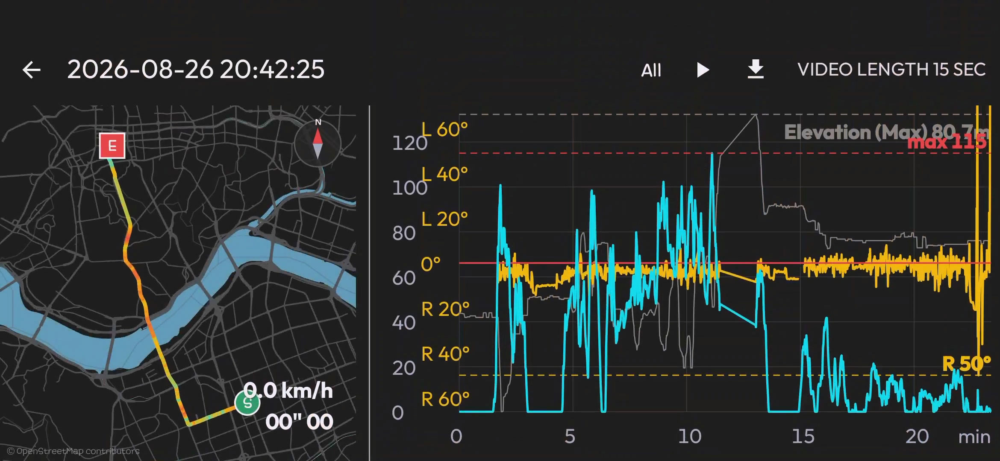
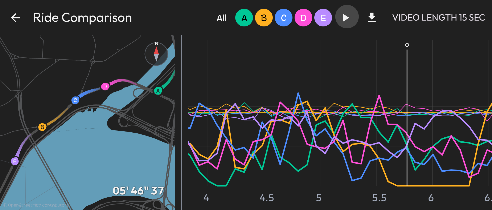

속도에 맞춘 자동 녹화
시작·정지 속도와 유지 시간을 설정하세요. GPS 속도 조건에 따라 연결된 카메라의 녹화를 제어합니다.
Automatic Recording on the Move
출발하면 녹화를 시작하고, 정차하면 마무리합니다.
달려온 길과 그 순간의 속도를 mOmentiOn으로 돌아보세요.
Android 10 이상 · Google Play 출시 준비 중
A Moment in Motion
A CLOSER LOOK
설정한 속도에 도달하면 녹화를 시작하고,
정차하면 마무리합니다.

AUTO RECORD
시작·정지 속도와 유지 시간을 설정하면 GPS 속도 조건에 따라 연결된 카메라의 녹화를 제어합니다.

MY DRIVE
이동 경로, 시간, 거리와 속도 변화를 함께 확인합니다.

ANALYZE
히트맵 위치와 그래프 값을 맞춰 보며 주행 흐름을 살펴보세요.

COMPARE
여러 경로의 속도와 경과 시간을 한 화면에서 비교합니다.
BUILT AROUND YOUR DRIVE
시작·정지 속도와 유지 시간을 설정하세요. GPS 속도 조건에 따라 연결된 카메라의 녹화를 제어합니다.
주변 Wi-Fi 목록에서 카메라를 선택하고 연결 정보를 저장합니다. 연결이 끊기면 자동으로 재연결을 시도합니다.
이동 경로와 속도를 기록하고, 속도별 히트맵으로 확인하세요. 기록한 경로를 확대하고 회전하며 살펴볼 수 있습니다.
여러 기록의 속도와 경과 시간을 비교합니다. 경로별 표시를 선택하고 그래프를 확대해 차이를 확인하세요.
경로 요약 이미지를 공유하고, 히트맵 재생을 영상으로 저장합니다. 히트맵만 또는 그래프를 포함한 출력을 선택하세요.
GPX, 로그, 공유 결과물을 선택한 폴더에 보관하세요. 소중한 경로는 잠금으로 보호할 수 있습니다.
QUICK START
카메라와 휴대폰을 연결한 뒤
원하는 녹화 조건을 설정하세요.
앱의 권한 안내에 따라 필요한 권한을 허용하고 기록을 보관할 폴더를 선택합니다.
카메라 Wi-Fi를 켜고 앱 설정에서 카메라 종류, SSID와 비밀번호를 확인합니다.
녹화 시작·정지 속도와 유지 시간을 정합니다. 출발 전 GPS와 카메라 연결 상태를 확인하세요.
주행 후 경로 목록에서 기록을 열어 히트맵을 확인하고 이미지 또는 영상으로 공유합니다.
READY FOR YOUR NEXT DRIVE
Google Play 출시를 준비하고 있습니다.
현재 개발 빌드와 변경 사항은 GitHub에서 확인할 수 있습니다.
Android 10 이상 · 빌드 산출물 다운로드에는 GitHub 로그인이 필요합니다.
카메라 지원 범위는 모델과 펌웨어에 따라 달라질 수 있습니다.
성공한 Android 워크플로 실행을 열고 하단 Artifacts에서 APK 산출물을 다운로드하세요. 압축을 풀어 APK를 설치할 수 있습니다. 개발 빌드는 정식 출시 버전이 아니며, 서명이 다른 기존 설치본과는 업데이트 설치가 되지 않을 수 있습니다.